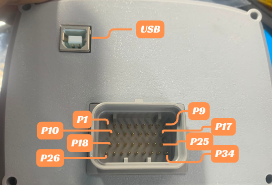

Terakhir diperbarui: 9 Agustus 2026
Mazduino X600¶
Gambaran Umum¶
Mazduino X600 adalah ECU dengan layar terintegrasi 4.3 inch — unit Dash dan ECU menjadi satu, sehingga tidak memerlukan dash display terpisah untuk memantau data mesin secara real-time. Produk ini berbasis firmware rusEFI dan dikonfigurasi/tuning melalui software TunerStudio.
Koneksi ke komputer menggunakan USB Type B, sedangkan wiring ke harness mesin menggunakan konektor 34-pin. Dengan 6 output ignition, 12 output low side, kombinasi input Hall (Digital) dan VR, serta input analog untuk sensor tegangan dan temperatur, X600 mendukung mesin hingga 6 silinder.
Dokumentasi ini disusun berdasarkan spesifikasi produk Mazduino X600 dan referensi pinout hardware pada dokumen manual X600.
Fitur Utama¶
- Layar 4.3 inch terintegrasi — Dash dan ECU dalam satu unit untuk menampilkan RPM, data sensor, dan status mesin secara real-time (display-only; seluruh tuning dilakukan via TunerStudio)
- Firmware rusEFI based
- Koneksi ke komputer via USB Type B untuk tuning dengan TunerStudio
- Konektor 34-pin untuk wiring ke harness mesin
- 6x output ignition (IGN1–IGN6; IGN5/IGN6 berbagi jalur dengan High Side 1/2)
- 2x output High Side (HS1, HS2) untuk beban 12V switching (via jumper option pada IGN5/IGN6)
- 12x output low side (LS1–LS12) untuk injektor, idle PWM, boost, VVT, relay, dan aktuator lain
- 4x input Analog Volt (AV1–AV4) untuk MAP, TPS, O2/wideband, PPS, atau sensor tekanan (0–5V)
- 4x input Analog Temp (AT1, AT2, AT3, AT6) untuk CLT, IAT, dan sensor temperatur lain
- 2x input Digital/Hall (Digital 1, Digital 2) untuk CKP/CMP, VSS, atau switch
- 2x input VR (VR1, VR2) untuk CKP/CMP tipe variable reluctor (berbagi jalur dengan Digital/Analog Temp via jumper option)
- Output TACH untuk sinyal RPM ke tacho
- Built-in 5V sensor supply untuk referensi sensor 5V
Wiring dan Instalasi¶
X600 menggunakan konektor 34-pin untuk seluruh koneksi ke harness mesin, dan USB Type B terpisah untuk koneksi tuning ke komputer.

Posisi pin pada konektor 34-pin dan port USB Type B.
Layout Konektor 34-pin¶
P1 P2 P3 P4 P5 P6 P7 P8 P9
P10 P11 P12 P13 P14 P15 P16 P17
P18 P19 P20 P21 P22 P23 P24 P25
P26 P27 P28 P29 P30 P31 P32 P33 P34
Pin Assignment Konektor 34-pin¶
| Pin | Fungsi | Keterangan |
|---|---|---|
| P1 | 12V | 12V ECU power supply |
| P2 | IGN6 / HS2 | Ignition 6 atau High Side 2 (12V switching) — jumper option |
| P3 | IGN5 / HS1 | Ignition 5 atau High Side 1 (12V switching) — jumper option |
| P4 | IGN2 | Ignition 2 |
| P5 | TACH | Output sinyal tacho (RPM) |
| P6 | AT6 / VR1- | Analog Temp 6 atau VR1- (input VR1 negatif) — jumper option |
| P7 | AT3 / VR2- | Analog Temp 3 atau VR2- (input VR2 negatif) — jumper option |
| P8 | AT2 | Analog Temp 2 |
| P9 | AT1 | Analog Temp 1 |
| P10 | GND | Power ground (ECU power ground) |
| P11 | IGN4 | Ignition 4 |
| P12 | IGN3 | Ignition 3 |
| P13 | IGN1 | Ignition 1 |
| P14 | AV1 | Analog Volt 1 (input 0–5V) |
| P15 | AV2 | Analog Volt 2 (input 0–5V) |
| P16 | AV3 | Analog Volt 3 (input 0–5V) |
| P17 | AV4 | Analog Volt 4 (input 0–5V) |
| P18 | LS2 | Low Side 2 |
| P19 | LS1 | Low Side 1 |
| P20 | DIGITAL1 / VR1+ | Digital 1 (Hall) atau VR1+ (input VR1 positif) — jumper option |
| P21 | DIGITAL2 / VR2+ | Digital 2 (Hall) atau VR2+ (input VR2 positif) — jumper option |
| P22 | GND | Sensor ground |
| P23 | GND | Sensor ground |
| P24 | 5V SENSOR | 5V sensor supply |
| P25 | LS12 | Low Side 12 |
| P26 | LS4 | Low Side 4 |
| P27 | LS3 | Low Side 3 |
| P28 | LS6 | Low Side 6 |
| P29 | LS5 | Low Side 5 |
| P30 | LS8 | Low Side 8 |
| P31 | LS7 | Low Side 7 |
| P32 | LS9 | Low Side 9 |
| P33 | LS10 | Low Side 10 |
| P34 | LS11 | Low Side 11 |
Jalur Bersama (Jumper Option)¶
Beberapa pin memiliki fungsi ganda yang dipilih melalui jumper. Konfigurasi jumper dapat ditentukan saat pemesanan pertama (dipilih sesuai kebutuhan mesin) atau diubah sendiri dengan mengatur jumper pada board. Selalu matikan sumber daya ECU sebelum mengubah konfigurasi jumper.
- P2 (IGN6 / HS2) dan P3 (IGN5 / HS1) — dapat dikonfigurasi sebagai output ignition (IGN5/IGN6) atau sebagai High Side (HS1/HS2) untuk beban 12V switching, misalnya alternator control atau solenoid 12V.
- P6 (AT6 / VR1-) dan P20 (DIGITAL1 / VR1+) — pasangan jalur untuk VR1. Pilih sebagai VR (VR1+ dan VR1-) untuk sensor CKP/CMP tipe variable reluctor, atau sebagai Analog Temp 6 + Digital 1 (Hall) untuk sensor Hall/temperatur.
- P7 (AT3 / VR2-) dan P21 (DIGITAL2 / VR2+) — pasangan jalur untuk VR2, dengan pola konfigurasi yang sama seperti VR1.
Catatan: Fungsi pin di atas ditentukan oleh posisi jumper. Pastikan konfigurasi jumper sesuai dengan wiring dan jenis sensor/aktuator yang dipakai. Jika ragu, tentukan konfigurasi saat pemesanan.
Ringkasan Jumlah I/O¶
| Kelompok | Jumlah | Keterangan |
|---|---|---|
| Ignition Output | 6 | IGN1–IGN6 (IGN5/IGN6 berbagi jalur dengan HS1/HS2) |
| High Side | 2 | HS1, HS2 untuk 12V switching (via jalur IGN5/IGN6) |
| Low Side | 12 | LS1–LS12 untuk injektor dan aktuator |
| Input Analog Volt | 4 | AV1–AV4 (0–5V) |
| Input Analog Temp | 4 | AT1, AT2, AT3, AT6 |
| Input Digital/Hall | 2 | Digital 1, Digital 2 (berbagi jalur dengan VR+) |
| Input VR | 2 | VR1 (+/-), VR2 (+/-) |
| Output Tacho | 1 | TACH |
| 5V Sensor Supply | 1 | Referensi 5V sensor |
Mapping Fungsional Firmware¶
Berikut mapping fungsi umum untuk setup firmware. Assignment dapat disesuaikan dengan kebutuhan mesin dan strategi tuning.
| Fungsi Umum | Jalur Default |
|---|---|
| Ignition 1–6 | IGN1 sampai IGN6 |
| Injector | Low Side (LS1 dan seterusnya) |
| Main Relay / Fuel Pump / Fan / AC / Idle | Low Side (LS yang tidak dipakai injector) |
| MAP / TPS / O2 / PPS / Sensor tekanan | Analog Volt 1–4 |
| CLT / IAT / Temp tambahan | Analog Temp (AT1, AT2, AT3, AT6) |
| CKP / CMP Hall | Digital 1 dan Digital 2 |
| CKP / CMP VR | VR1 dan VR2 (via jalur bersama) |
| Tacho | TACH |
Contoh Skenario Penggunaan I/O¶
Jalur Low Side, Analog Volt, dan Analog Temp bersifat generik sehingga alokasinya tergantung konfigurasi mesin. Beberapa contoh skenario:
- Mesin 6 silinder full sequential: gunakan IGN1–IGN6 untuk ignition COP/individual, dan 6 jalur Low Side untuk injektor sequential. Sisa Low Side (LS7–LS12) bebas dipakai untuk idle PWM, boost solenoid, VVT, fuel pump, fan, atau aktuator lain.
- Mesin 4 silinder: gunakan 4 channel ignition dan 4 Low Side untuk injektor, sisanya untuk aktuator dan relay. Jalur IGN5/IGN6 dapat dialihkan menjadi High Side (HS1/HS2) untuk 12V switching.
- Trigger VR: untuk sensor CKP/CMP tipe variable reluctor, gunakan jalur VR1 (P6 + P20) dan VR2 (P7 + P21).
- Trigger Hall: untuk sensor CKP/CMP tipe Hall, gunakan Digital 1 (P20) dan Digital 2 (P21).
- Analog Volt: input sensor analog 0–5V seperti MAP, TPS, O2/wideband, PPS, atau sensor tekanan.
- Analog Temp: input sensor temperatur seperti CLT (Coolant Temp) dan IAT (Intake Air Temp).
Layar Terintegrasi 4.3 inch¶
X600 dilengkapi layar 4.3 inch yang menyatu dengan ECU untuk menampilkan data mesin secara real-time (RPM, data sensor, dan status), sehingga tidak memerlukan dash display terpisah. Layar bersifat display-only — seluruh konfigurasi dan tuning dilakukan melalui TunerStudio, bukan melalui menu di layar.
Software Tuning¶
X600 dikonfigurasi dan dituning menggunakan TunerStudio melalui koneksi USB Type B ke komputer.
- Hubungkan X600 ke komputer menggunakan kabel USB Type B.
- Buka TunerStudio dan pilih/port yang sesuai, lalu hubungkan ke ECU.
- Gunakan file konfigurasi (firmware/definition) yang memang ditujukan untuk Mazduino X600 agar seluruh pin berfungsi sesuai desain board.
- Lakukan pengecekan output dengan test mode di TunerStudio sebelum start engine.
Panduan Instalasi Singkat¶
- Pastikan power ground (P10) dan sensor ground (P22, P23) terhubung dengan baik.
- Hubungkan P1 ke suplai 12V ECU yang stabil.
- Pilih mode trigger Hall (Digital) atau VR sesuai jenis sensor CKP/CMP, lalu wiring pada jalur bersama yang sesuai.
- Tentukan pemakaian jalur IGN5/IGN6 sebagai ignition atau High Side sesuai kebutuhan.
- Hubungkan sensor 5V ke jalur 5V Sensor Supply (P24) dan sensor temperatur/tegangan ke jalur Analog yang sesuai.
- Hubungkan X600 ke komputer via USB Type B dan verifikasi output dengan test mode di TunerStudio sebelum menyalakan mesin.
Catatan Penting¶
- Layar 4.3 inch bersifat display-only; seluruh tuning dilakukan via TunerStudio.
- Output ignition ditujukan untuk smart coil. Untuk dumb coil wajib menggunakan driver/IGBT eksternal.
- HS1 dan HS2 (jalur IGN5/IGN6) dapat digunakan sebagai output 12V switching, misalnya alternator control.
- Jalur VR (VR1/VR2) berbagi pin dengan Digital dan Analog Temp — pastikan hanya satu fungsi yang diwiring per pasangan pin.
- Firmware untuk board ini berbasis rusEFI. Gunakan definition/firmware khusus X600.
Referensi¶
- Website Mazduino - https://www.mazduino.com/
- Wiki Mazduino - https://wiki.mazduino.com/
- Download TunerStudio - https://www.tunerstudio.com/index.php/downloads
- Referensi firmware rusEFI - https://wiki.rusefi.com